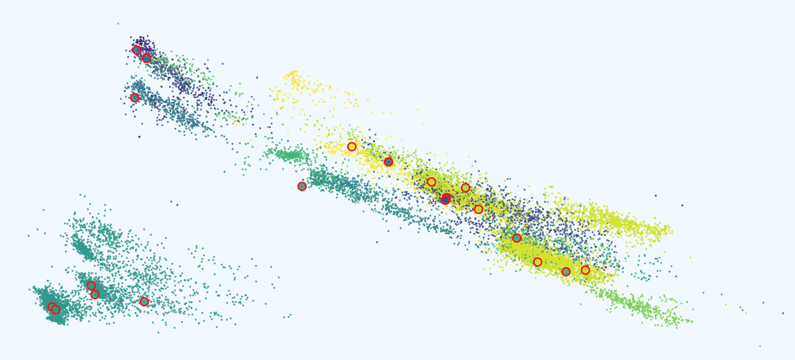
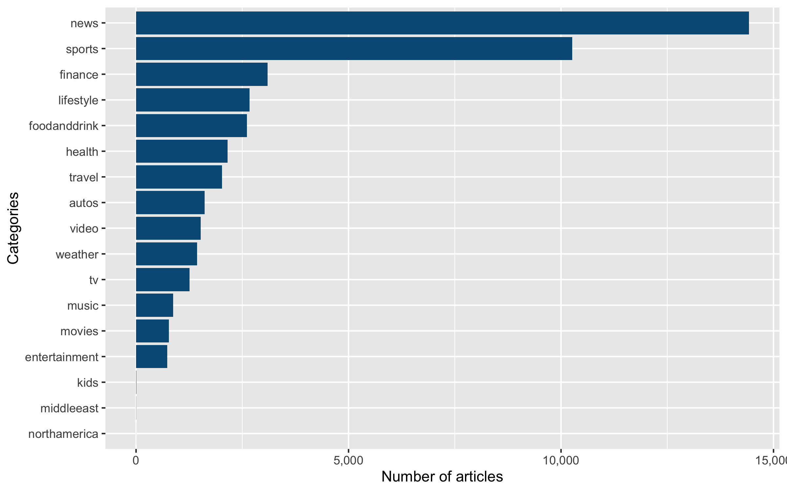
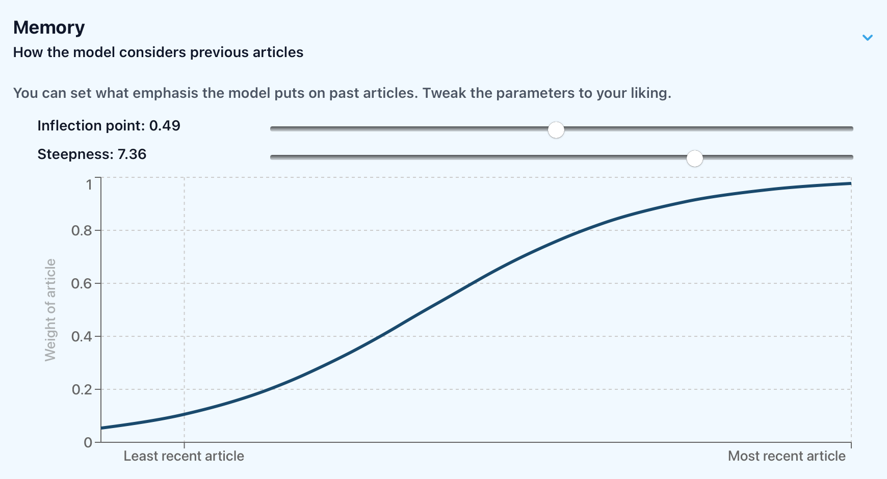
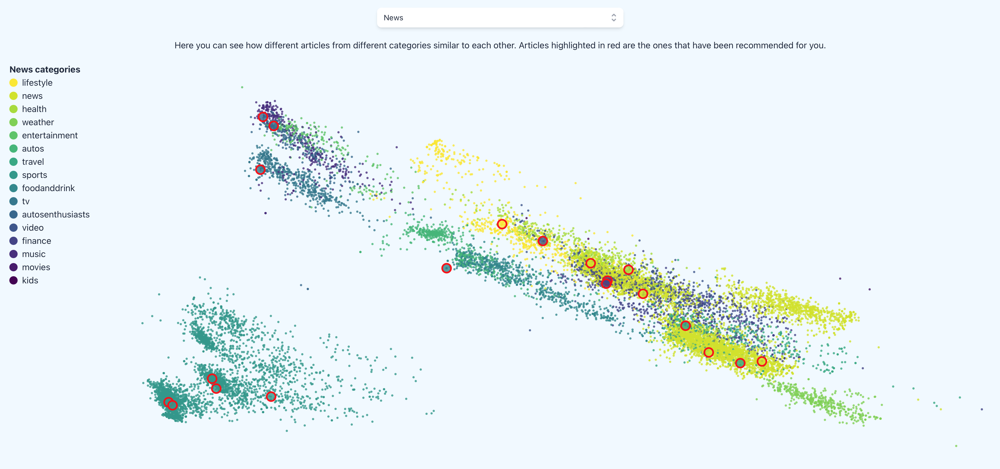
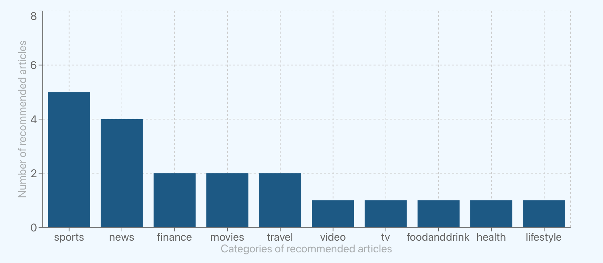
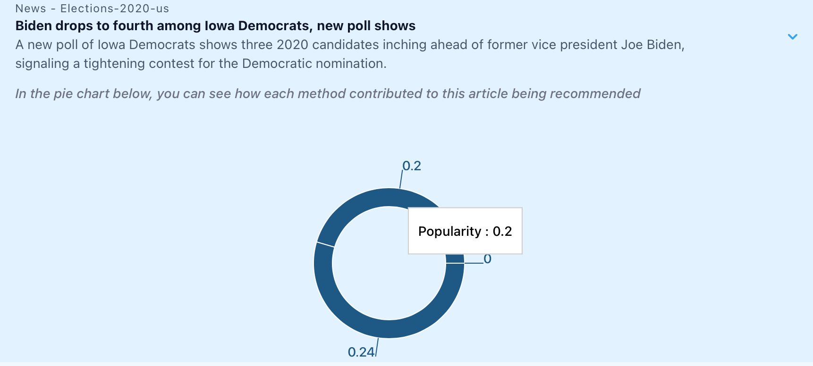
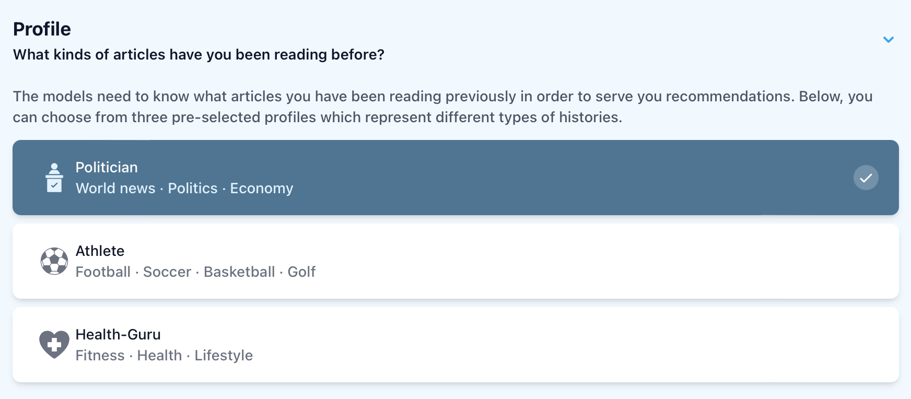

Making Recommendation Systems More Transparent to the Lay User
A project for the course Interactive Machine Learning, tought by Dr. Menna Elassady in Spring 2022
Abstract
Social media and online platforms have a huge impact on what people get exposed to, mainly through recommendations.
It is therefore primordial to make the recommendation process as much transparent as possible.
In this project, we built a news feed powered by more and less interpretable recommendation systems, along with a dashboard to interact with them.
Introduction
According to the 2021 survey on news consumption across social media, roughly half of US adults report getting news from social media at least sometimes .
Given that recommendation systems determine what news articles users get exposed to and read, it is important for everybody to understand how they work.
To facilitate the understanding of these algorithms, we implemented three recommendation systems, one of which being designed to be highly interpretable and customizable.
Some summary statistics and visualizations are displayed along the news feed, so as for the user to get a better grasp of what the models recommended.
This interactivity is provided through a web interface developed for this project.
Dataset
We used the Microsoft News Dataset (MiND) , a large-scale dataset for news recommendation research, collected from anonymized behavior logs of the Microsoft News website.
For the purpose of our project, we used the demo flavor of the dataset – a smaller version of the original one.
It consists of two main datasets: one on news articles and one on user behaviors, as detailed below.
|
News dataset |
User dataset |
| Training dataset |
26,740 records |
22,034 records |
| Validation dataset |
18,723 records |
7,538 records |
News dataset
Each row corresponds to a news article, and contains its title and abstract, along with the url to fetch it online.
Some metadata on the news article is also provided in the dataset: the category and subcategory of the news tackled in the article,
as well as the list of entities extracted from its title and from its abstract, using the Wikidata knowledge graphCollaborative, open-source knowledge database.
Number of articles per category in the news dataset
Below, you can see an example of subcategories for the category "video":
| Category |
Sub-categories |
| video |
animals |
| lifestyle |
| news |
| popculture |
| science |
| viral |
| video |
User dataset
Each row corresponds to an "impression", that is to say a set of recommended news displayed to a user,
along with the news click history of the user, and a label to know which impressed news article was ultimately clicked on.
There is also the date and time of the impression.
Note that some users appear several times in the dataset, as each row corresponds to a new impression (but not necessarily to a new user).
Embedding datasets
Along with the two main datasets, the MiND also contains pre-generated, 100-dimensional embeddings of the extracted Wikidata entities, and of their relationships to one another.
Preprocessing
As will be discussed in the model section, we needed to embed news and users in order to make recommendations.
In the following subsections, we will discuss how we proceeded.
News dataset
To create news embeddings, we relied on the entity embeddings provided in the MiND.
After dropping the articles without any extracted entity, we embedded news articles as the average of the embeddings of all the entities extracted from their title and/or abstract.
Additionally, we wanted to add the metadata on the news (sub)category.
However, merely label-encoding them would only add one dimension to the hundred already existing, and the (sub)category information would likely be overlooked by the models.
Thus, we decided to encode them as the average embedding of all the news articles from a given (sub)category, and to concatenate them to the existing embeddings, leading to 300-dimensional news embeddings.
User dataset
We proceeded likewise to create user embeddings, using the average of the embeddings of all the news articles in their history.
Example logistic curve used to assign different weights to past articles
However, we also implemented a “memory” behavior: that is, most recent articles in the history are assigned larger weights than news articles read a long time ago.
This behavior can be toggled by the user and takes the form of a logistic curve.
Models
To highlight to the user the differences between recommendation systems, we implemented three different models that make recommendations.
Random model
This baseline model generates random embeddings, and makes random recommendations.
It does not take into account history and does not allow for hyperparameter customization.
Black box model
The black box model we implemented is a Long- and Short-Term User Representations (LSTUR) model, a neural network using news and user encoders to learn both users’ long-term preferences and their short-term interests.
It was implemented using the microsoft/recommenders Python package.
This model was selected as it is deemed as state-of-the-art in the world of news recommendations, and as its inner mechanisms are fairly intricate - especially for the lay user - hence the “black box” alias.
White box model
The white box model is the core of the project.
It is a homemade, interpretable and customizable recommendation system.
More specifically, it makes recommendations according to a mix of three methods the user can choose the proportions of:
-
Content-based recommendation:
Recommending news articles most similar to the articles already read by the current user.
Concretely, news articles are ranked by the (cosine) similarity of their embedding to the current user’s.
-
Popularity-based recommendation:
Recommending news articles most popular among other users.
Concretely, news articles are ranked by the number of times they were clicked on by users, and by the ratio of the number of clicks on over the number of impressions.
-
Collaborative filtering recommendation:
Recommending news articles that were read by users most similar to the current user.
Concretely, users are assigned weights proportional to the (cosine) similarity of their embedding to the current user.
Then, articles are ranked by the sum of the scores of all the users who have read them.
Each method yields a score for every single news article.
In the dashboard we developed, the user can choose the weight of each method in the news feed: in practice, the final score of each news articles is computed as the weighted sum of the scores from the three methods hereinabove.
On top of this, we let the user choose the weights assigned to more/less recent articles in the history, by way of a customizable logistic curve.
However, such recommendation system, though pretty simple and interpretable, is still very much subject to popularity bias.
This results in more popular articles being recommended even more, by the popularity-based and collaborative filtering methods.
Additionally, the system also suffers from the echo chamber effect: being “locked” in one single category by recommendation systems, which recommend the same category over and over to a user.
This effect is due to the (over)use of similarity-based recommendations, as in white box's content-based and collaborative filtering recommendation methods.
To temper such effects, which are intrinsic to all the standard recommendation system, we developed features to let the user choose if they want to add the following side objectives, and to what extent:
-
Diversity:
Constraining the model to recommend news articles from different news categories.
Concretely, after each draw, the probability to draw again an article from the same category as the one just drawn, decreases by the percentage chosen.
-
Exploration:
Allowing the model to draw news articles with lower scores as well.
Concretely, probability weights used to draw the news articles are calculated using the logistic function - whose hyperparameters depend on the percentage chosen - on their scores.
-
Surprise:
Requiring some random news articles among the recommendations.
Concretely, the chosen percentage of the recommendations are drawn at random, and placed at random positions.
Visualization
We used Principal Component Analysis to reduce news and user embeddings into two-dimensional embeddings, so as to graphically plot them.
News embeddings are colored according to their category (in an arbitrary order).
In the news scatter plot, we highlight the recommended news articles so as to get a qualitative sense of the diversity in the recommended news set.
PCA reduction of news embeddings along with higlighted recommendations
Statistics for a given set of recommended articles
In addition to this, we provide a bar chart of the most represented categories in the recommended set.
With this, the user can see the distribution across categories, of the news that got recommended to them.
This visualization is useful to get a quick grasp of the diversity within the recommended set, and to compare different models and hyperparameter sets.
Pie chart showing how much each method contributed to a recommendation
Profile selection in the web application
For interpretability purposes, we allow the user to see how much each method contributed in recommending a given article to them, in the form of a pie chartBecause of his French heritage, Florian prefers the designation of origin "camembert plot".
To make the overall demo easier, we created three profiles, each being defined by its favorite news subcategories:
- Athlete (football_nfl, basketball_nba, soccer)
- Health guru (fitness, healthyliving, weightloss)
- Politician (newsworld, newspolitics, financenews)
To build their histories, we drew at random a set of twenty articles from their favorite subcategories.
Conclusion
Above, we presented our implementation of an explainable recommendation system. However, there are many directions for further improvements.
- Different embedding methods - We used the embeddings provided by the MiND, and built news and users embeddings by averaging them.
Using text embeddings (from news titles or abstract) and taking into account the date and time of the impressions may lead to better results.
-
Performance evaluation - We did not directly evaluate the performance of each model, eg. how well the user would be expected to read the recommended articles.
Indeed, the standard evaluation method for the MiND challenge does not reflect what we wanted to showcase in this project: more transparent, customizable, diverse recommendation systems.
Another set of metrics, measuring how diverse a set of recommendation is, or how prone to the echo chamber effect a model is, would be a definite improvement for quantitative comparison of recommendation models.
- Social media posts - This dataset only includes news articles.
Yet it would be very insightful to look at this project from a social media perspective, so as to model the variety of content people actually get exposed to on social media.
- More interactive visualizations - In this version of the dashboard, we for example do not allow for zooming into the visualization of the news and user embeddings,
nor for hovering over specific articles to see information about them.
While we try to provide a user journey through the dashboard, we could add a step-by-step introduction to all the components, for example using the intro.js package.
Also, more visualizations could be displayed on the dashboard, for the lay user to better understand the mechanism of each recommendation method for example.
All of this would improve the user experience.